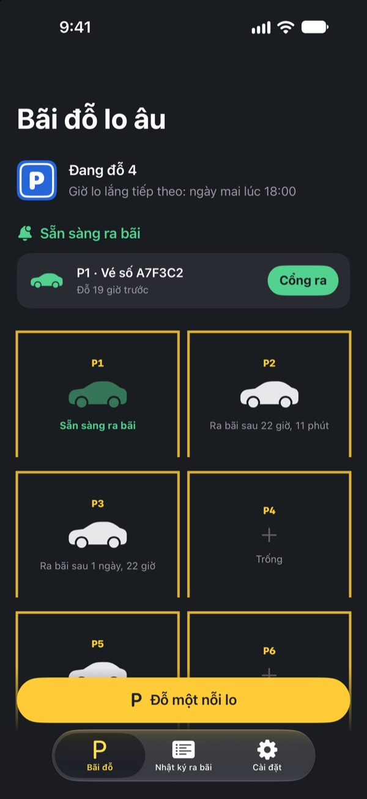
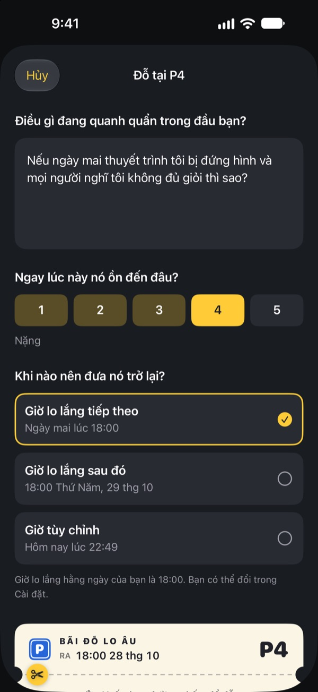
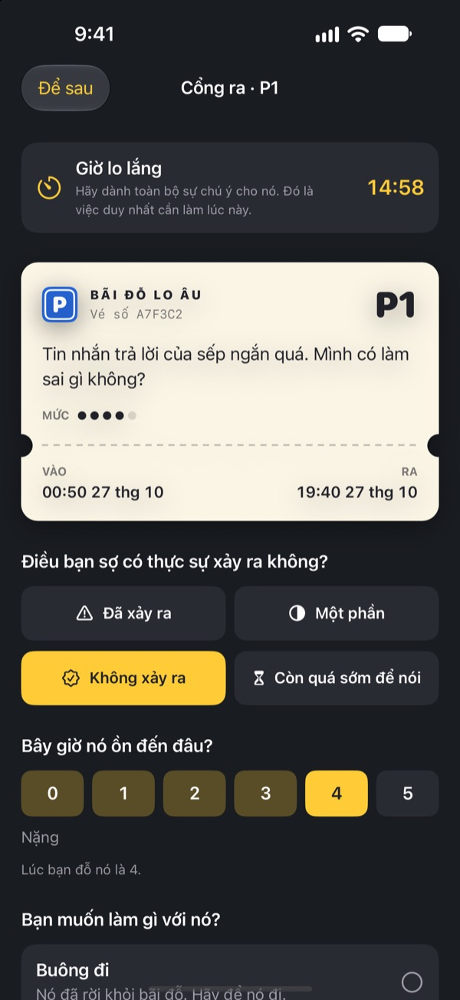
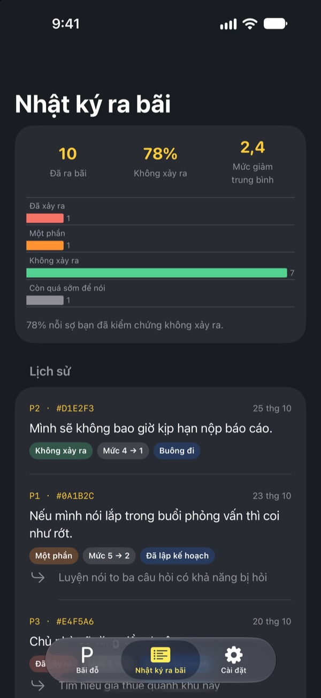

Đỗ nỗi lo lại đây.
Lát nữa hãy lấy.
Viết điều cứ quanh quẩn trong đầu trước khi ngủ lên vé gửi xe rồi gửi lại. Đến Giờ lo lắng, chúng tôi trả lại cho bạn. Từ giờ tới lúc đó, bạn không cần mang nó theo.
Mọi tính năng đều miễn phí. Không quảng cáo, không cần tài khoản.

Thử đỗ một nỗi lo
Giữ ví dụ có sẵn hoặc viết điều bạn đang nghĩ lúc này. Khi đỗ, nó sẽ bị làm mờ, và đến Giờ lo lắng bạn lấy ra xem lại.
Tắt đèn rồi mà đầu vẫn chưa chịu tắt?
Vừa đặt lưng xuống là bắt đầu: một câu đã nói ban ngày, cuộc họp ngày mai, tin nhắn vẫn chưa ai trả lời. Càng cố không nghĩ, nó càng to hơn. Bãi đỗ lo âu không bắt bạn xua nỗi lo đi. Bạn viết nó ra, cho nó một chỗ đỗ và dành riêng một khoảng thời gian để xử lý.
Viết ra là đặt xuống được
Viết đúng như nó vang lên trong đầu, rồi chọn xem lúc này nó to đến đâu, từ 1 đến 5. Xé vé ra, nỗi lo sẽ nằm lại trong bãi, mờ đi.
Nếu nó lại chạy vòng về, hãy nhắc nó: chỗ của nó có rồi. Sẽ tới lượt nó, nhưng không phải bây giờ.

Chỉ 15 phút vào Giờ lo lắng
Mỗi ngày đến Giờ lo lắng sẽ có lời nhắc. Ở cổng ra, bạn đọc lại nỗi lo, xem nó có thật sự xảy ra không và giờ nó còn to đến đâu.
Rồi bạn buông nó, biến nó thành một bước nhỏ tiếp theo, hoặc đỗ lại tới Giờ lo lắng kế tiếp.

Thấy nỗi lo đúng được bao nhiêu lần
Càng nhiều nỗi lo ra bãi, nhật ký ra bãi càng cho thấy rõ bao nhiêu điều đã thật sự xảy ra và mức độ giảm bao nhiêu.
Nỗi lo thường đoán tương lai tệ hơn thực tế. Ghi càng nhiều, bạn càng ít tin vào nỗi lo tiếp theo.

Bắt đầu với 3 bước
- 1
Chọn Giờ lo lắng
Lần đầu mở ứng dụng, chọn thời điểm mỗi ngày để đối diện nỗi lo. Có thể đổi sau trong Cài đặt.
- 2
Đỗ một nỗi lo thật
Đỗ ngay điều đang khiến bạn bận lòng và cảm nhận mức độ thay đổi trước và sau.
- 3
Cho phép nhắc ra bãi
Đến Giờ lo lắng, bạn nhận lời nhắc chỉ ghi số chỗ đỗ.
Vì sao có hiệu quả
- Chỉ lo vào giờ cố định
- Những người dời nỗi lo sang một khoảng ngắn mỗi ngày đã lo ít hơn, ít lo âu và ít vấn đề giấc ngủ hơn. (Borkovec và cộng sự, 1983; McGowan & Behar, 2013)
- Viết ra để buông xuống
- Lập kế hoạch cụ thể giúp việc dang dở không chen vào suy nghĩ, và viết 5 phút trước khi ngủ giúp người ta ngủ nhanh hơn. (Masicampo & Baumeister, 2011; Scullin và cộng sự, 2018)
- Kiểm tra điều gì đã thật sự xảy ra
- Khi những người hay lo âu kéo dài ghi lại nỗi lo của mình, 91% đã không xảy ra. (LaFreniere & Newman, 2020)
Bãi đỗ lo âu dựa trên kỹ thuật trì hoãn lo âu của liệu pháp nhận thức hành vi (CBT), đã được nghiên cứu hàng chục năm.
Mọi tính năng đều miễn phí
Miễn phí
- Chỗ đỗ không giới hạn
- Nhắc Giờ lo lắng mỗi ngày, tự chọn giờ ra bãi
- Cổng ra và nhật ký ra bãi
- Thông tin chi tiết: bao nhiêu điều đã xảy ra, mức độ giảm bao nhiêu
Tiền tip (tùy bạn)
- Nếu thấy có ích, bạn có thể gửi nhà phát triển một khoản tip nhỏ
- Chọn mức nhỏ, vừa hoặc lớn
Tip không mở khóa gì cả. Không tip vẫn dùng được mọi tính năng.
Không quảng cáo, không tài khoản, không máy chủ, không công cụ phân tích. Mọi thứ bạn viết chỉ nằm trên iPhone của bạn.
Câu hỏi thường gặp
Đổi Giờ lo lắng thế nào?
Vào mục Giờ lo lắng trong tab Cài đặt. Giờ mới áp dụng cho những nỗi lo bạn đỗ từ đó trở đi. Nỗi lo đã đỗ vẫn giữ giờ ra bãi ban đầu.
Tôi không nhận được lời nhắc ra bãi.
Hãy kiểm tra mục Thông báo trong tab Cài đặt. Nếu thông báo đang tắt, chạm Mở Cài đặt iOS để bật lên. Khi bật chế độ Tập trung hoặc Không làm phiền, lời nhắc có thể đến trong im lặng. Dù không có lời nhắc, nỗi lo đã tới giờ vẫn hiện là sẵn sàng ra bãi trong bãi đỗ.
Thông báo có hiện nỗi lo của tôi không?
Không. Thông báo chỉ hiện số chỗ đỗ, như “P3 đã sẵn sàng ra bãi”. Nội dung nỗi lo chỉ hiện khi bạn mở ứng dụng và vào cổng ra.
Có xem trước Giờ lo lắng được không?
Chạm vào xe của nó trong bãi và chọn Gửi đến cổng ra ngay bây giờ. Tuy vậy, trì hoãn hiệu quả nhất khi bạn chờ. Phần lớn nỗi lo sẽ nhỏ đi khi đến Giờ lo lắng.
Chuyển dữ liệu sang iPhone mới được không?
Mọi thứ chỉ lưu trên iPhone, không có tài khoản hay đồng bộ. Nếu khôi phục iPhone mới từ bản sao lưu iCloud hoặc máy tính, hoặc dùng Bắt đầu nhanh, dữ liệu sẽ chuyển sang cùng các ứng dụng khác.
Xóa ghi chép thế nào?
Trong tab Nhật ký ra bãi, vuốt một mục sang trái để xóa. Xóa ứng dụng thì mọi dữ liệu cũng bị xóa.
Đây có phải là trị liệu không?
Bãi đỗ lo âu là công cụ tự chăm sóc dựa trên kỹ thuật trì hoãn lo âu của CBT. Đây không phải thiết bị y tế và không thay thế chẩn đoán hay điều trị của chuyên gia.
Nếu tôi thấy quá sức thì sao?
Nếu nỗi lo đang chiếm hết ngày của bạn, hoặc bạn có ý nghĩ làm hại bản thân, xin đừng gánh một mình. Tại Việt Nam, hãy gọi 115 (cấp cứu) khi khẩn cấp, và tìm đến chuyên gia sức khỏe tâm thần hoặc người bạn tin tưởng.
Có câu hỏi hay góp ý, hãy gửi đến leeo@kakao.com.